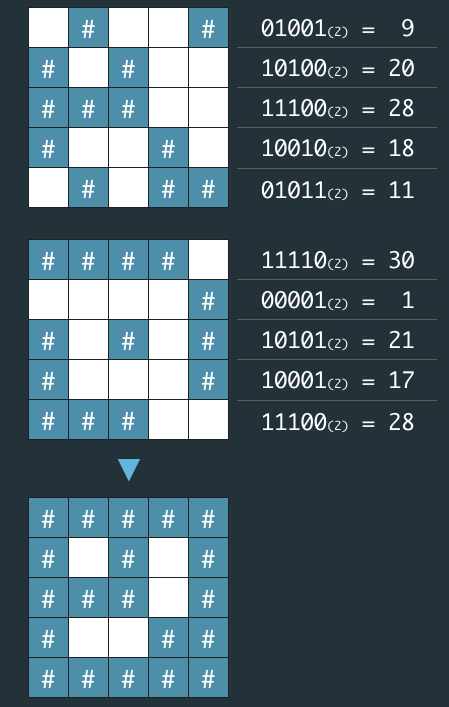

네오는 평소 프로도가 비상금을 숨겨놓는 장소를 알려줄 비밀지도를 손에 넣었다. 그런데 이 비밀지도는 숫자로 암호화되어 있어 위치를 확인하기 위해서는 암호를 해독해야 한다. 다행히 지도 암호를 해독할 방법을 적어놓은 메모도 함께 발견했다.

네오가 프로도의 비상금을 손에 넣을 수 있도록, 비밀지도의 암호를 해독하는 작업을 도와줄 프로그램을 작성하라.
입력으로 지도의 한 변 크기 n 과 2개의 정수 배열 arr1, arr2가 들어온다.
원래의 비밀지도를 해독하여 '#', 공백으로 구성된 문자열 배열로 출력하라.
| 매개변수 | 값 |
|---|---|
| n | 5 |
| arr1 | [9, 20, 28, 18, 11] |
| arr2 | [30, 1, 21, 17, 28] |
| 출력 | ["#####","# # #", "### #", "# ##", "#####"] |
| 매개변수 | 값 |
|---|---|
| n | 6 |
| arr1 | [46, 33, 33 ,22, 31, 50] |
| arr2 | [27 ,56, 19, 14, 14, 10] |
| 출력 | ["######", "### #", "## ##", " #### ", " #####", "### # "] |